Las Distribuciones
Una distribución o distro de Linux no es más que una versión personalizada del sistema operativo original, el kernel o núcleo de Linux.
¿Sabías que existen más de 600 distribuciones Linux? Esto se debe al carácter abierto, la condición de código libre de Linux,
que cualquiera puede ampliar y modificar.
Es la primera barrera de entrada a la que se enfrentan los usuarios de Linux, así que vamos a trata de superarla,
explicando qué es una distribución Linux,
en qué se diferencian, y que distro de Linux necesitas.
1Basadas en Debian
El proyecto Debian fue fundado en el año 1993 por Ian Murdock, después de haber estudiado en la Universidad de Purdue. Él escribió el manifiesto de Debian, que utilizó como base para la creación de la distribución Linux Debian. Dentro de este texto, los puntos destacables son: mantener la distribución de manera abierta, coherente al espíritu del núcleo Linux y de GNU.
2Basadas en Arch Linux
Arch Linux es una distribución GNU/Linux de propósito general, desarrollada independientemente para x86-64, que se esfuerza por proporcionar las últimas versiones estables de la mayoría del software, siguiendo un modelo de lanzamiento continuo (rolling-release).
3Basadas en RedHat Linux
Red Hat Enterprise Linux es un sistema operativo Linux para empresas, el cual está certificado en cientos de nubes y con miles de proveedores. Proporciona una base sólida para todos los entornos y las herramientas necesarios para prestar servicios y ejecutar cargas de trabajo con mayor rapidez para cualquier aplicación.
Imagenes sobre las Distintas Distribuciones y Entornos de Linux

 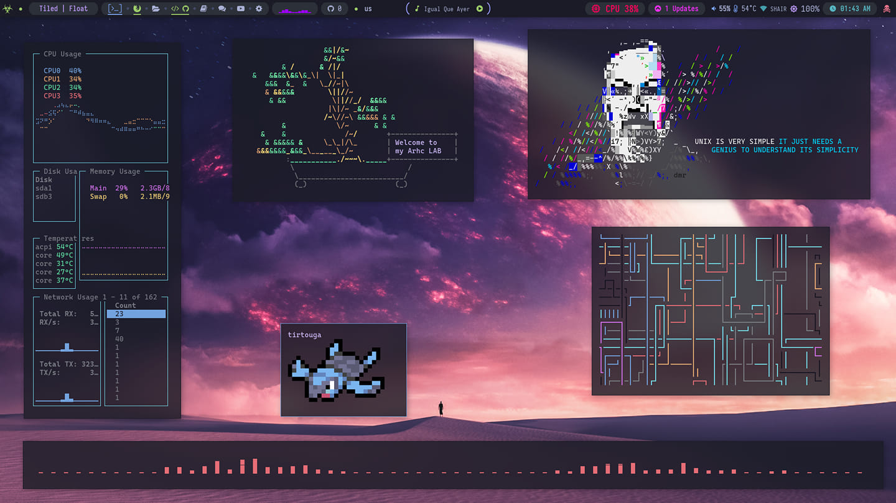
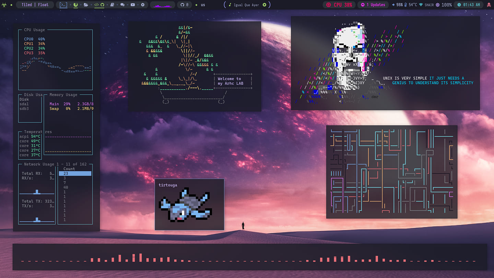
 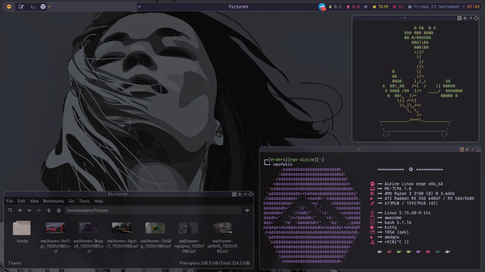
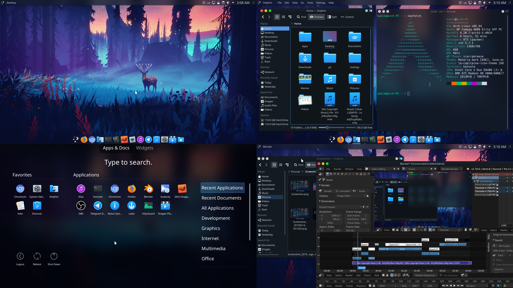
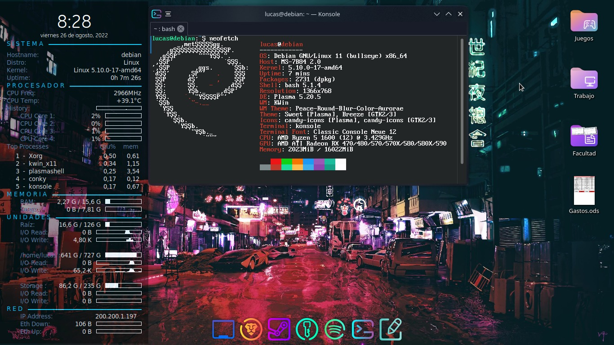
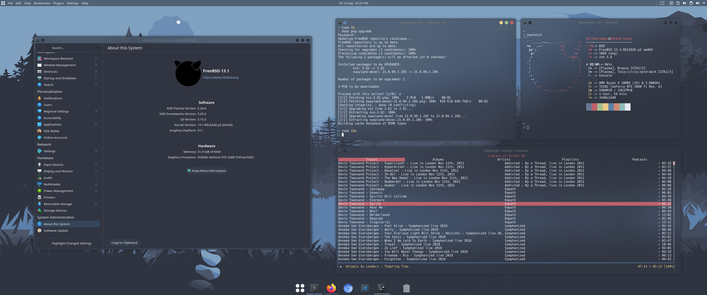
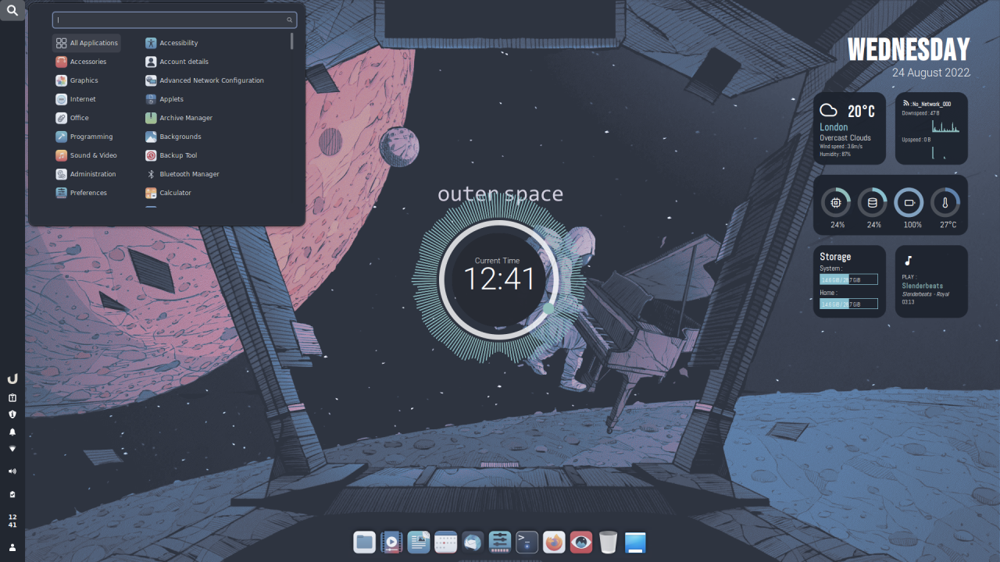
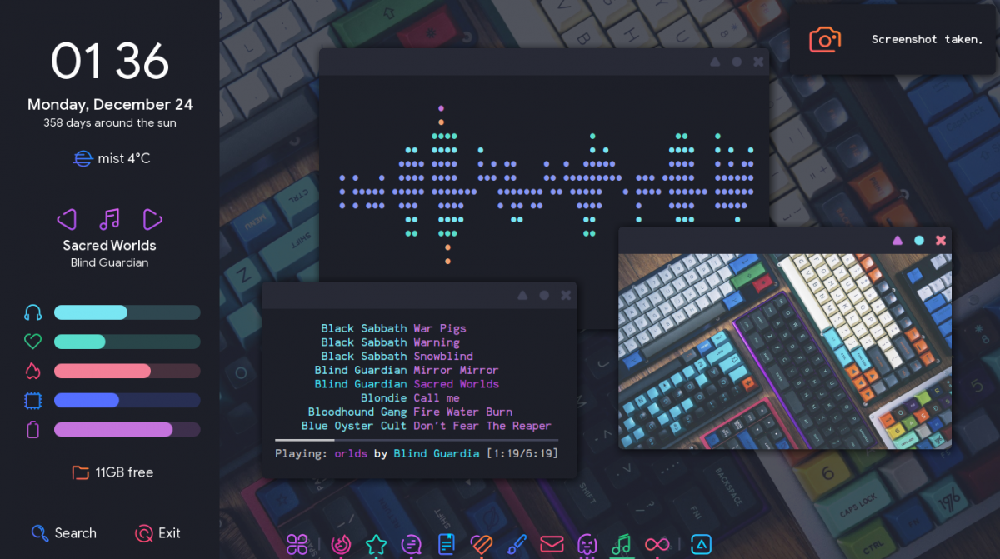
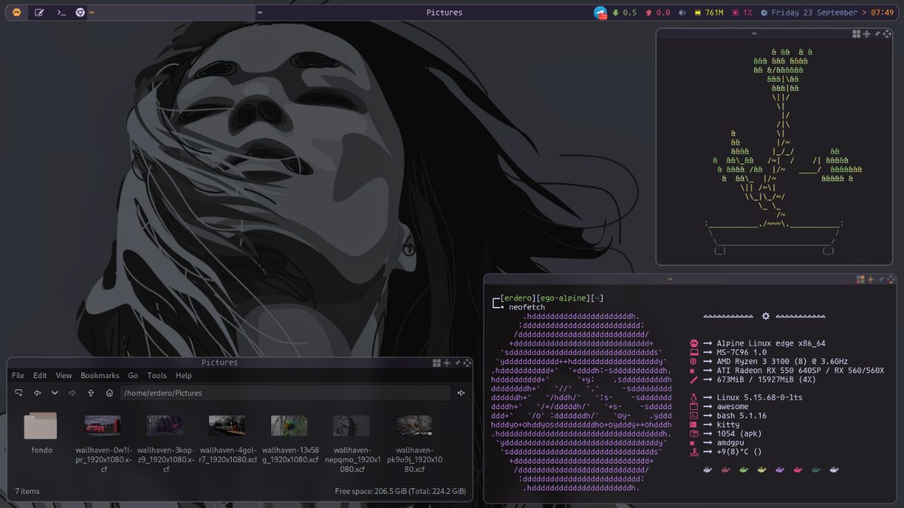
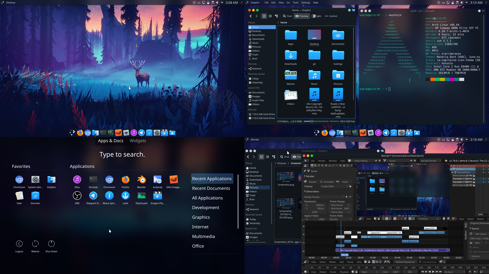
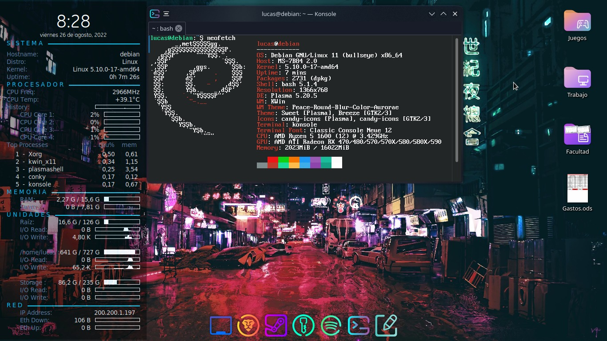
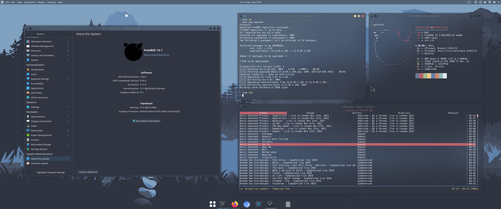
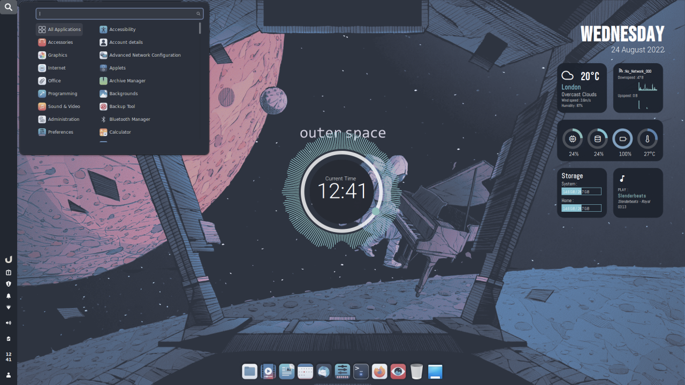
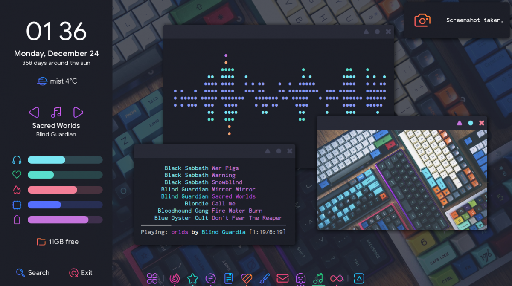